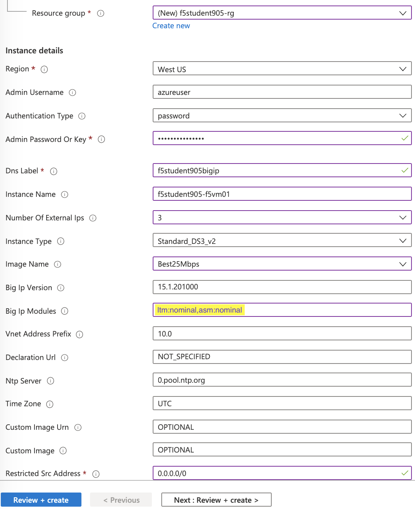

WAF - Identifying the level of protection required for applications > WAF - Identifying the level of protection required for applications Source |
Deploy BIG-IP In Azure¶
Note
Please note that you will incur costs associated with creating Azure resources and consuming F5 BIG-IP marketplace offers if you are using your own Azure account.
Launch BIG-IP 3nic stack¶
Browse to Github to access the F5 – Azure templates
- https://github.com/F5Networks/f5-azure-arm-templates/tree/master/experimental/standalone/3nic/new-stack/payg
- Scroll down and click Deploy to Azure button
You will be redirected to portal.azure.com
{kind=link}
Important
Replace the # sign with you student number when logging in and anywhere else you see f5student#.
- Log into the azure portal when prompted
- Username : f5student#@f5custlabs.onmicrosoft.com
- Password: ChangeMe123
Complete the Customized template using the following values (replace # with your student number to avoid conflicts)
Resource Group Select Create New Resource Group f5student#-rg Location East US Admin Username azureuser Admin Password ChangeMeNow123! DNS Label f5student#bigip Instance Name f5student#-f5vm01 Number of External IPs 3 Image Name Best25Mbps BIG IP Modules ltm:nominal,asm:nominal Restricted Src Address 0.0.0.0/0 Click the Review + Create
Click Create after confirming entries
This will take appoximately 10 minutes
- You can monitor deployment on the azure dashboard by opening the Notifications in the azure portal. Continue with the Lab. The deployment will complete by the time the BIG-IP configuration is required
- It may take a couple of minutes for your resources to show up
Update Azure Network Security Group to allow required app ports
- click on f5student#-rg-ext-nsg to view inbound and outbound rules
- click on inbound security rules in the left-hand side bar to view inbound rules
- click Add and fill in table on right to with the following information:
- Destination Port Range: 80
- Protocol: TCP
- Name: HTTP
- click Add on the bottom right
- repeat steps above to allow HTTPS (port 443) and port 8081
- final network security group should appear similar to image below. If you don't see your rules click Refresh next to Add
{kind=link}
{kind=link}
{kind=link}
{kind=link}
{kind=link}